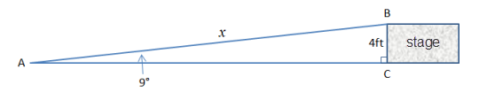
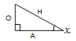

In this class of problems, we are given an angle and some other measures, and asked to find the distance up a slope or ramp.
We are designing a ramp up to a stage to make it wheelchair accessible. The stage is 4 ft high, and building regulations state that the ramp angle must be 9°. How long will the ramp be, measured along its slope?
Include all the information given and label the measure we are asked to find as x. Draw it as close to scale as you can.

Reviewing what we are given and what we need:

We see from our calculation that the ramp length is roughly 6 times the stage height. Looking at our diagram we see this looks about right. If you get a very different answer, the most common error is not setting the calculator to work in degrees or radians as needed.
Repeat this problem with a stage height of 8ft. The ramp length should come out to double the above.
Why? All 9° right triangles are similar (AAA), and in similar triangles all corresponding sides remain in the same ratio. So if you double one side (the side BC) the others will all double also.